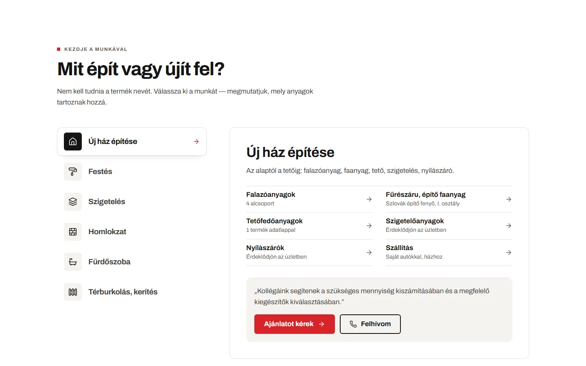
01 · Kezdőlap
„Mit épít?” választó
Új ház, festés, szigetelés, homlokzat, fürdőszoba, térburkolás és kerítés — egy kattintás, és ott a munka összes anyagcsoportja, mellette az ajánlatkérés és a hívás gombja.
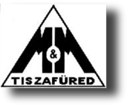
Paletta Vakolatcentrum Weboldal-ajánlat · 2026Weboldal-ajánlat · M&M Tiszafüred Kft.
A Paletta Vakolatcentrum új weboldala — hogy aki Tiszafüreden és környékén épít vagy felújít, telefonról is egy perc alatt megtalálja, amit keres, és egy koppintással felhívja a boltot.
01A kiindulópont
A Facebook-oldalon 2026-ban is jönnek a hírek: szlovák építő fenyő érkezett, Leier kerítéskő, házhoz szállítás saját autókkal. A vakolat-centrum.hu ebből semmit nem mutat — és telefonon, ahol ma a legtöbben keresnek, alig használható.
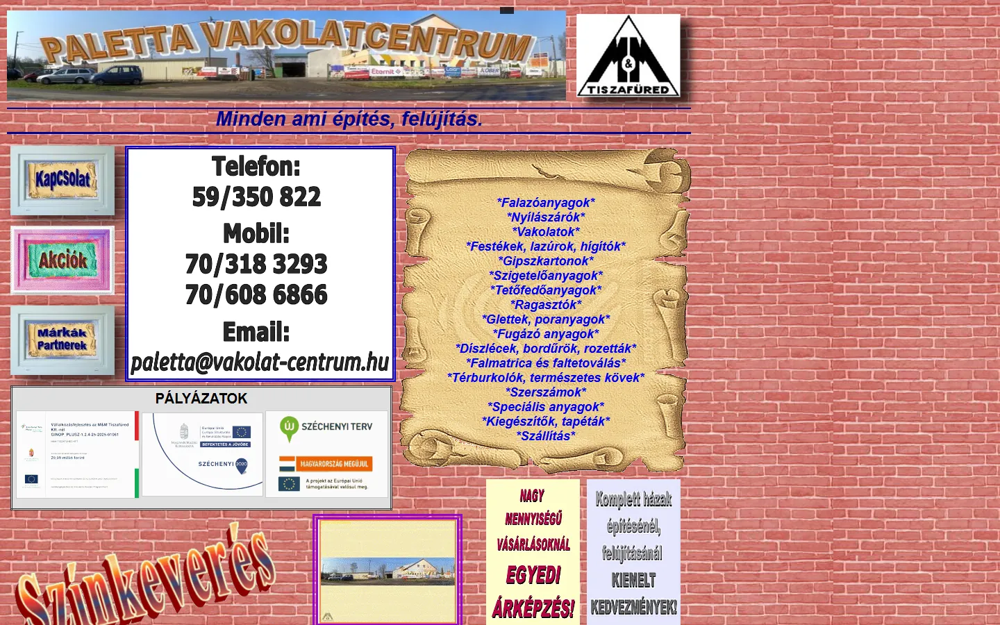
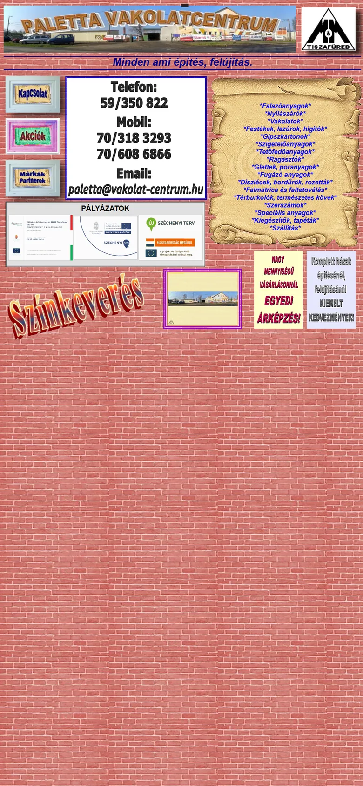
Mérés: vakolat-centrum.hu (kezdőlap + 6 aloldal), 2026. október 9., Chrome, 1440 px-es és telefonos nézet. A termékadat-ellenőrzés: kingstone.hu → meton.hu, 2026. augusztus.
02Arculat
Nem találtam ki új márkát. Az oldal a cég mai, Facebookon is használt megjelenését követi: a fekete háromszög-logót és a pirosat. A különbség a fegyelem — egy betűcsalád, nyugodt felületek, és a színt a telep valódi fotói adják.
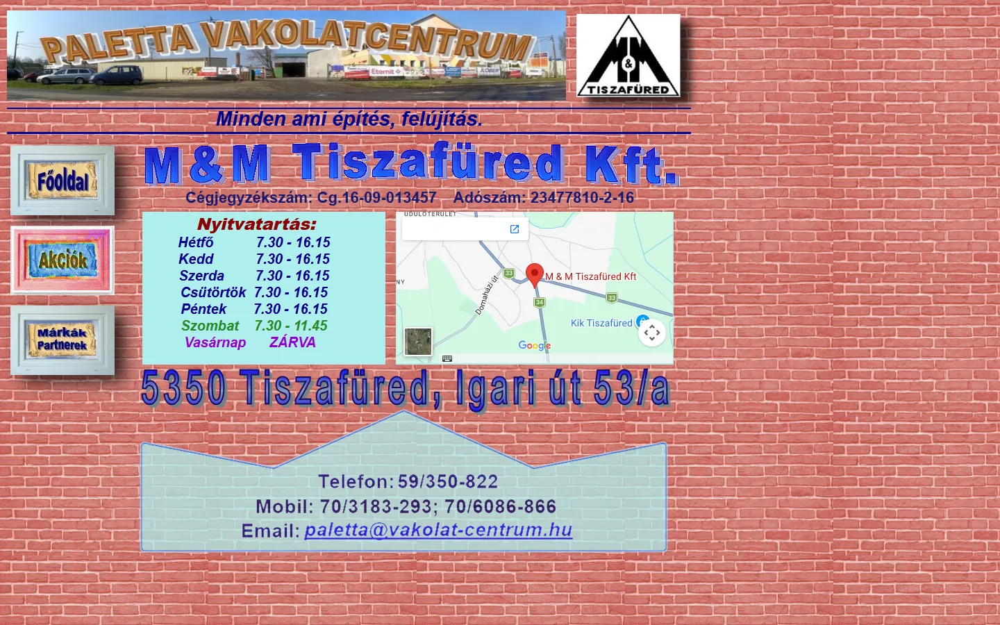
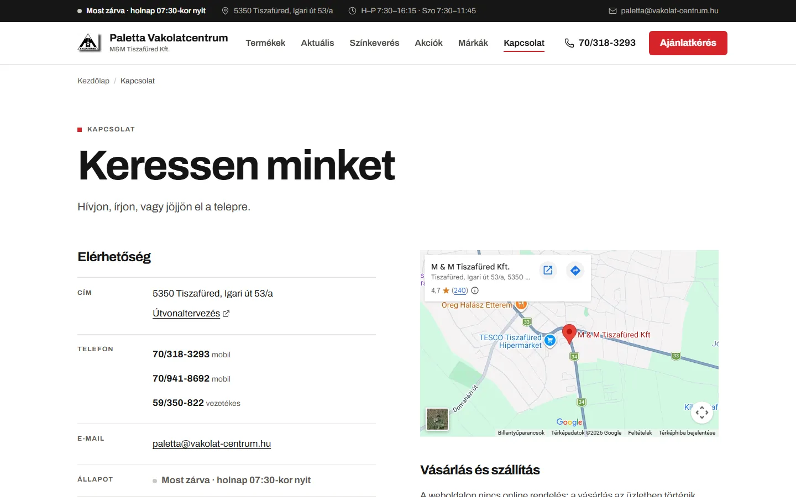
Változtatható vastagságú groteszk: a címek és a szövegek ugyanabból a fájlból jönnek. Ékezetekkel együtt, telefonon is jól olvasható.
Vékony vonalas jelek a „Mit épít?” választóhoz: új ház, festés, szigetelés, homlokzat — díszítés helyett tájékozódásra.
Az Archivo SIL Open Font License alatt szabadon használható — nincs licencdíj. A weboldal a betűt saját tárhelyről tölti, nem a Google-től.
03Az új weboldal
Nem látványterv, hanem működő, 67 oldalas weboldal a régi oldal tartalmával, a gyártói adatlapokkal, a Facebook-hírekkel és a telep saját fotóival. Az alábbi keretekben maga az élő oldal fut.
04Mit tud az új oldal
Egy felújító ritkán keres „C2TE flexibilis ragasztót” — fürdőszobát csinál. Az új oldal a munkából indul, és onnan vezet a kategóriáig, a termékig és a boltig.

Új ház, festés, szigetelés, homlokzat, fürdőszoba, térburkolás és kerítés — egy kattintás, és ott a munka összes anyagcsoportja, mellette az ajánlatkérés és a hívás gombja.
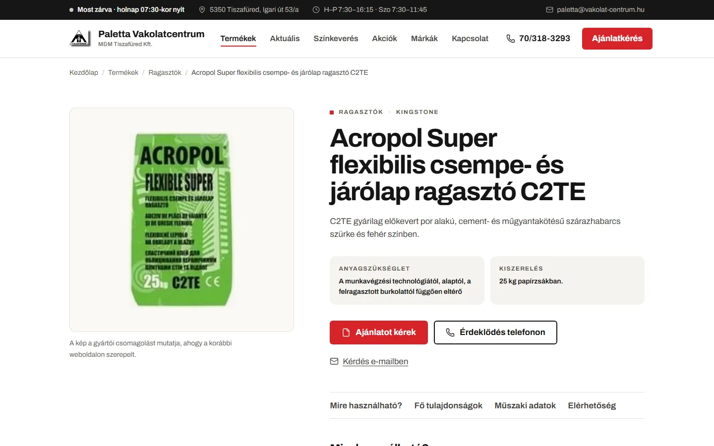
18 kategória négy főcsoportban, 37 termékoldal, 326 műszaki adatsor — „Mire használható”, „Fő tulajdonságok”, „Műszaki adatok” szerint rendezve. Ékezet nélkül is kereshető, és az ajánlatkérő magától kitölti a termék nevét.
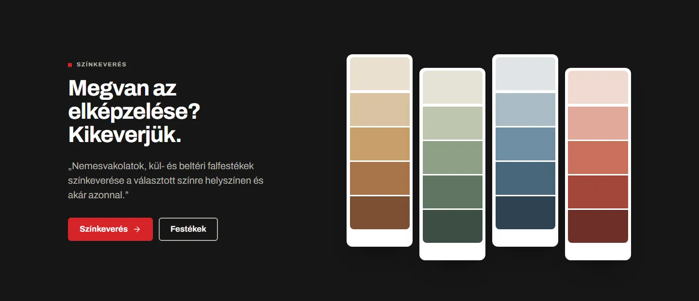
A régi oldalon egy kép-felirat volt; most saját szekció és saját oldal a bolt szó szerinti ígéretével: nemesvakolatok és falfestékek színkeverése a helyszínen, akár azonnal.
Minden oldal tetején: „Most nyitva” vagy „Most zárva · holnap 07:30-kor nyit”, magyar idő szerint. Ünnepi zárva tartás egy helyen beírva, mindenhol megjelenik. Három szám, mind hívható.
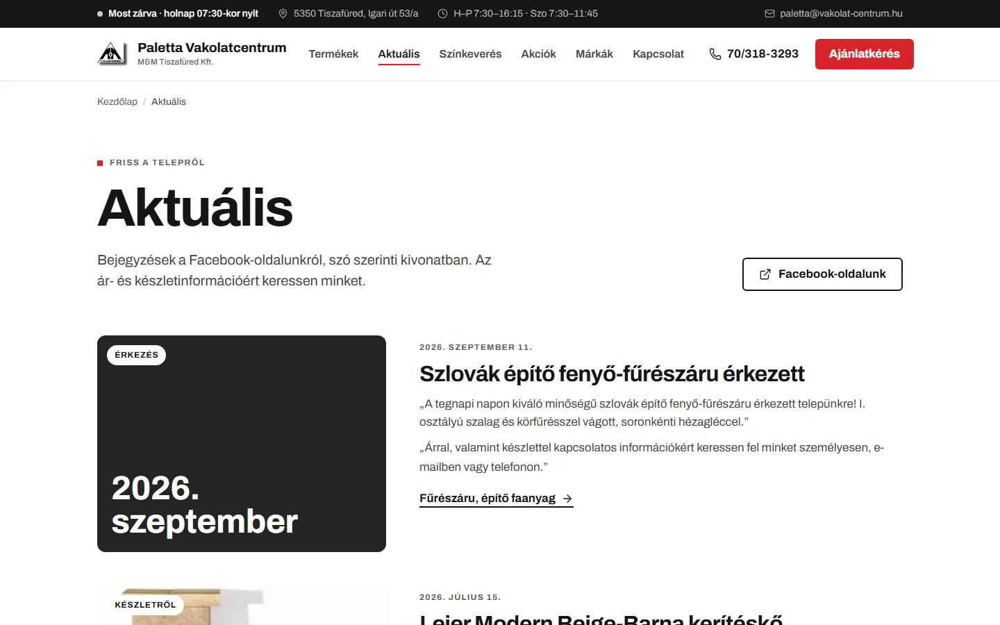
Érkező áru, készletről elérhető termék: a Facebook-bejegyzések szó szerinti kivonata, dátummal, a kategóriájára mutató linkkel — annak is, aki nem használ Facebookot.
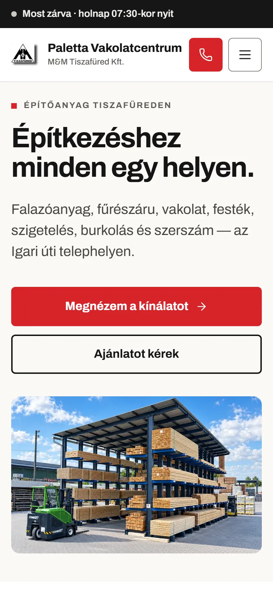
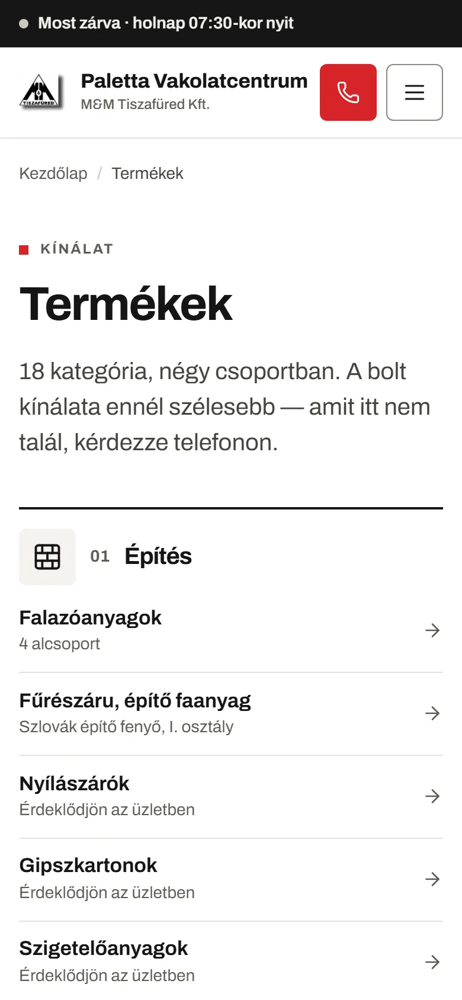
Sokan a telepen vagy az építkezésen nyitják meg. Nagy, legalább 44 px-es érintési célok, a hívógomb mindig a fejlécben, a kezdőlapon minden adat pontosan egyszer szerepel.
05Mérhetően
| Szempont | Mostani vakolat-centrum.hu | Új weboldal |
|---|---|---|
| Telefonon | Nincs mobilnézet: a kicsinyített asztali lap, nagyítani kell | Telefonra tervezve, hívógomb a fejlécben, 360–1920 px között 8 méretben tesztelve |
| Telefonszám, e-mail | Képként beillesztve; a Facebookon és a Google-ön szereplő 70/941-8692 hiányzik | Szövegként, egy koppintással hívható — mindhárom szám |
| Termékek | 37 termék; az adatlapok külön gyártói fájlokban, 34 megszűnt márkanéven | 37 termékoldal, 326 műszaki adatsor, kereső és szűrő; a mai kínálatra frissíthető |
| Oldalcím a Google-ben | A galérián: „Galéria generated by VisualLightBox.com” | Egyedi cím és leírás mind a 67 oldalon |
| Megosztási kép (Facebook, Messenger) | Nincs, egyik oldalon sem | Minden oldalon, a telep saját fotójával |
| Cégadatok a keresőknek | Nincs | Cím, telefonok, nyitvatartás, koordináta és a termékek gépileg olvashatóan |
| Nyitvatartás | Táblázat a kapcsolat-oldalon | „Most nyitva / zárva” jelző minden oldalon, rendkívüli zárva tartással |
| Technika | HTML 4.01 (1999), Internet Explorer 8-emuláció, képként beillesztett feliratok | Statikus HTML5 egy adatforrásból: nincs adatbázis, bejelentkezés és frissítésre váró bővítmény |
| Biztonságos kapcsolat | http-n is betölt, nincs átirányítás https-re | Élesítéskor kötelező https-átirányítás és biztonsági fejlécek |
| Régi címek | — | A régi aloldalak (termek.html, kapcsolat.html…) átirányítva — a meglévő Google-helyezés nem vész el |
| Akadálymentesség | — | WCAG 2.2 AA-ra tervezve: billentyűzettel bejárható, látható fókusz, kikapcsolt animációk tiszteletben tartva |
A „mostani” oszlop adatai a vakolat-centrum.hu 2026. október 9-i méréséből származnak (kezdőlap + 6 aloldal).
06Mit nyer vele a bolt
A telefonszám nem kép, hanem gomb. Aki a Google-ből érkezik, egy koppintással a pultnál van.
„Térkő Tiszafüred”, „csemperagasztó Tiszafüred”: 67 saját című oldal, termékenként külön — mind egy-egy bejárat a boltba.
Aki betér, már látta, mi kell a fürdőszobához vagy a homlokzathoz — a pultnál a mennyiségről és a színről esik szó.
Ami a Facebookra felkerül, az a weboldalon is megjelenik — azoknál is, akik nem használnak Facebookot.
Az új, statikus oldalon nincs bejelentkezés, nincs bővítmény, nincs adatbázis — nincs mit feltörni és nincs mit frissíteni.
Új áru, akció, ünnepi nyitvatartás: egy üzenet, és felkerül — a bolt munkatársainak nem kell a weboldalt kezelniük.
07Menetrend
Az oldal kész; a hátralévő munka néhány adat egyeztetése és az élesítés. Az oldalon csak a régi weboldalról és a bolt Facebook-oldaláról igazolható adat szerepel — amit csak Önök tudnak, azt megkérdezem.
Bemutató és egy rövid, 15–20 perces kérdőív, például:
A vakolat-centrum.hu átállítása az új oldalra a mostani tárhelyen, https, a régi aloldalak átirányítása, végső ellenőrzés telefonon és gépen.
Új áru, akció, nyitvatartás, Facebook-hír — havonta én vezetem át, a boltnak nem kell a weboldallal foglalkoznia.
08Árajánlat
| Tétel | Óra | Nettó ár |
|---|---|---|
| Arculat | ||
| Szín- és betűrendszer az M&M megjelenéséhezA fekete háromszög-logóhoz és az M&M-pirosához igazított paletta, egyetlen betűcsalád (Archivo), saját vonalas ikonok, kontrasztmérés | 3 | 15 000 Ft |
| Arculat összesen | 3 | 15 000 Ft |
| Weboldal | ||
| Tartalom-audit és -átvételA régi oldal 7 oldala, 34 gyártói adatlap → 326 műszaki adatsor, 6 pályázati dokumentum, 35 fotó, a Facebook-oldal 2026-os bejegyzései; forrásnapló minden állításhoz | 12 | 60 000 Ft |
| UX/UI tervezésAsztali és mobil nézet, „Mit épít?” választó, négy főcsoportos kínálat, termékoldal-sablon, komponensek az arculatra | 12 | 60 000 Ft |
| FejlesztésOldalgenerátor egy adatforrásból (67 oldal), ékezetfüggetlen termékkereső és szűrő, élő nyitvatartás-jelző, ajánlatkérő, galéria, Aktuális oldal, mozgásrendszer | 26 | 130 000 Ft |
| Termékfotók egységesítése37 termékkép besorolása (csomagolás / anyagminta / prospektus) és optikai méretkiegyenlítése, hogy a rács egyenletes legyen | 4 | 20 000 Ft |
| MinőségbiztosításKeresőoptimalizálás, strukturált cégadatok, megosztási képek, akadálymentesség (WCAG 2.2 AA), helyi betűtípusok, 8 képernyőméret tesztje | 6 | 30 000 Ft |
| Élesítés és átadásFeltöltés a mostani tárhelyre, a régi címek átirányítása, HTTPS és biztonsági beállítások; forráskód átadása | 3 | 15 000 Ft |
| Weboldal összesen | 63 | 315 000 Ft |
| Fizetendő összesen | 66 | 330 000 Ft + ÁFA |
Új áru, akció, nyitvatartás, Facebook-hír: a változásokat havonta én vezetem át, kb. 1 óra/hó keretben; tárhely-felügyelet és biztonsági mentés. Havonta felmondható.
Ma a nyitva.hu, Firmania, Cylex és társai 16:30-as zárást mutatnak, két helyen „Nyílászáró” a fő kategória, és két Facebook-oldal létezik. A Google-profil és a katalógusok rendbetétele a weboldallal egyező adatokra — 4 óra.
A KingStone-termékek utódai ma METON / STONE néven, új csomagolással futnak. A bolt listája alapján a termékoldalak, nevek és fotók cseréje — óradíjban, a termékek számától függően.
Az M&M háromszög-logó ma csak 180×150 px-es képként létezik. Vektoros újrarajzolás változatokkal (fekvő, egyszínű, önálló jel) nyomdához, molinóhoz, autóhoz — 5 óra.
Egy 30 perces bemutatón — Tiszafüreden, személyesen is — végigmegyünk az élő oldalon, és válaszolok minden kérdésre.